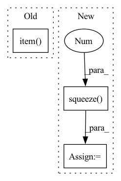

Pattern ID :2965
Before Change
self.n_graphs = self.data["_n_nodes"].shape[0]
self.node_cumsum = [0]
for i in range(self.n_graphs):
self.node_cumsum.append(self.node_cumsum[-1] + self.data["_n_nodes"][i].item() )
self.n_nodes = self.node_cumsum[-1]
if "_n_edges" in self.data and (force_recompute or not hasattr(self, "edge_cumsum")):
self.n_graphs = self.data["_n_edges"].shape[0]After Change
if "_n_edges" in self.data and (not hasattr(self, "edge_cumsum")):
self.n_graphs = self.data["_n_edges"].shape[0]
self.edge_cumsum = torch.zeros((self.n_graphs+1,), dtype=torch.long)
self.edge_cumsum[1:] = torch.cumsum(self.data["_n_edges"], dim=0).squeeze(1 )
self.n_edges = self.edge_cumsum[-1]
@classmethod
def from_data_list(cls, lst, attrs={}):In pattern: SUPERPATTERN
Frequency: 4
Non-data size: 3
Instances Fragment ID: 11442434
Project Name: 20171130/equivariant-nn-zoo
Commit Name: b79fcf96ea180c3d7842f0a01a148180998b1999
Time: 2022-07-07
Author: hangruibi@outlook.com
File Name: e3_layers/data/batch.py
M Class Name: Batch
N Class Name: Batch
M Method Name: computeCumsums(1)
N Method Name: computeCumsums(2)
M Parent Class: Data
N Parent Class: Data
M File Name: e3_layers/data/batch.py
N File Name: e3_layers/data/batch.py
M Start Line: 22
M End Line: 34
N Start Line: 22
N End Line: 31
Before Change
loss.backward()
optimizer.step()
target_hr_list.append(data["target"].item())
predicted_list.append(outputs[2].mean().item() )
fin_loss += loss.item()
return target_hr_list, predicted_list, fin_loss / len(data_loader)After Change
target_hr_batch = list(data["target"].mean(dim=1, keepdim=True).squeeze(1).detach().numpy())
target_hr_list.extend(target_hr_batch)
predicted_hr_batch = list(outputs.squeeze(2).mean(dim=1, keepdim=True).squeeze(1 ) .detach().numpy())
predicted_hr_list.extend(predicted_hr_batch)
fin_loss += loss.item()
Fragment ID: 11442435
Project Name: anweshcr7/rhythmnet
Commit Name: 465030f9efb5f86a94572239a5147c1c667f24fd
Time: 2021-02-23
Author: anwesh.marwade@beyondsports.nl
File Name: src/engine.py
M Class Name: AnonimousClass
N Class Name: AnonimousClass
M Method Name: train_fn(4)
N Method Name: train_fn(4)
M Parent Class:
N Parent Class:
M File Name: src/engine.py
N File Name: src/engine.py
M Start Line: 12
M End Line: 28
N Start Line: 12
N End Line: 33
Before Change
logit = self.affine(hid.squeeze(1))
posterior = F.softmax(logit, dim=1)
wav = torch.multinomial(posterior, 1).squeeze(1)
wavs[:, i] = 2 * wav.item() / (self.quant_dim - 1.0) - 1.0
mu = self.quant_dim - 1
wavs = torch.sign(wavs) / mu * ((1 + mu) ** torch.abs(wavs) - 1)After Change
for mel in mels:
mel = mel.unsqueeze(0)
mel_emb, _ = self.mel_rnn(mel)
mel_emb = mel_emb.squeeze(0 )
mel_embs.append(mel_emb)
mel_embs = pad_sequence(
mel_embs, batch_first=True, padding_value=float(self.quant_dim // 2) Fragment ID: 11442419
Project Name: yistlin/universal-vocoder
Commit Name: a2f043170a0335459db6b45b7d8dc692db9a00f5
Time: 2020-10-06
Author: yishen992@gmail.com
File Name: models/universal_vocoder.py
M Class Name: UniversalVocoder
N Class Name: UniversalVocoder
M Method Name: generate(2)
N Method Name: generate(2)
M Parent Class: nn.Module
N Parent Class: nn.Module
M File Name: models/universal_vocoder.py
N File Name: models/universal_vocoder.py
M Start Line: 58
M End Line: 88
N Start Line: 63
N End Line: 120
Before Change
// loss = loss_fn(out, data["target"])
// _, batch_preds = torch.max(out.data, 1)
// fin_loss += loss.item()
predicted_list.append(out.mean().item() )
target_hr_list.append(data["target"].item())
return target_hr_list, predicted_listAfter Change
target_hr_batch = list(data["target"].mean(dim=1, keepdim=True).squeeze(1).detach().numpy())
target_hr_list.extend(target_hr_batch)
predicted_hr_batch = list(outputs.squeeze(2).mean(dim=1, keepdim=True).squeeze(1 ) .detach().numpy())
predicted_list.extend(predicted_hr_batch)
Fragment ID: 11442432
Project Name: anweshcr7/rhythmnet
Commit Name: 465030f9efb5f86a94572239a5147c1c667f24fd
Time: 2021-02-23
Author: anwesh.marwade@beyondsports.nl
File Name: src/engine.py
M Class Name: AnonimousClass
N Class Name: AnonimousClass
M Method Name: eval_fn(3)
N Method Name: eval_fn(3)
M Parent Class:
N Parent Class:
M File Name: src/engine.py
N File Name: src/engine.py
M Start Line: 37
M End Line: 51
N Start Line: 41
N End Line: 63